Original Music
Latest Release!
Additional Music
Sound Design
Demo Reel
Film Scores
Play Hera's Adventure
Can you escape the volcano?
Who is Thomas Ascough?
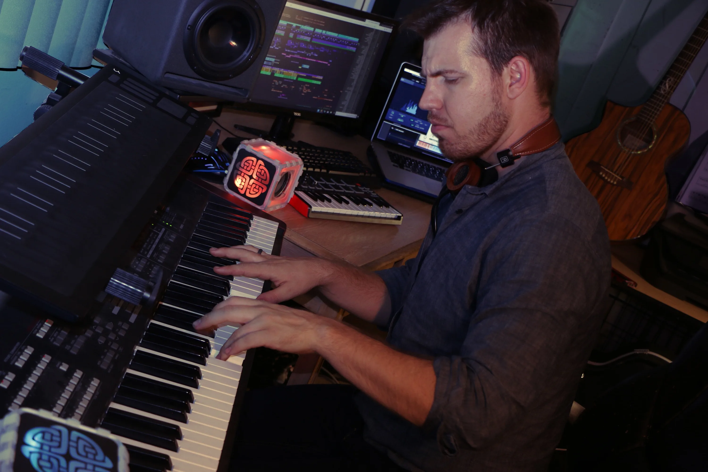
Thomas Ascough is a composer and sound designer for all forms of visual media, including film, TV, video games, and podcasts. His work has been featured in productions worldwide, with recent placements on Gordon Ramsay and Motorway Cops: Catching Britain.
Thomas graduated with honors from Full Sail University’s Bachelor of Science in Music Production program. He later earned a Master of Fine Arts in Scoring and Composition from the Academy of Art University in San Francisco, specializing in music for video games.
After several years working as a studio technician in Los Angeles, he transitioned into music for visual media. He went on to co-found SF Audio Guild to provide high-quality sound design and music for fantasy-themed media. Today, he continues to write for the Emmy Award-winning music library Crimesonics while teaching music and recording arts at Fusion Academy.
Credits and Placements
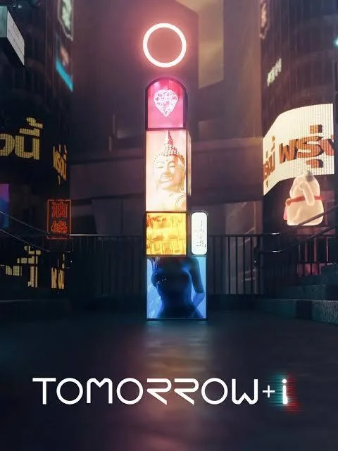
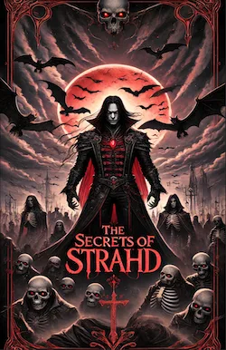
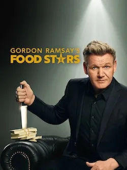
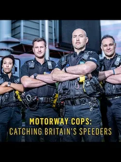
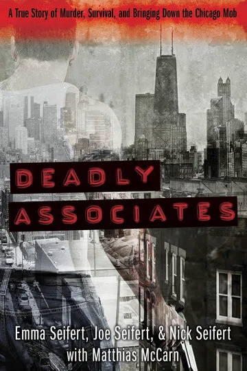
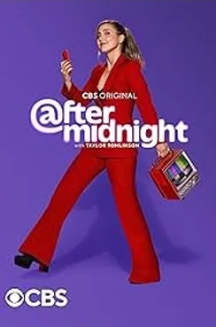
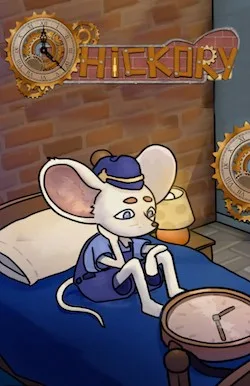
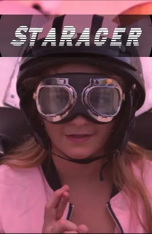
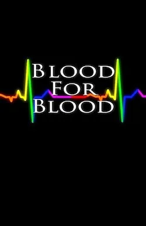
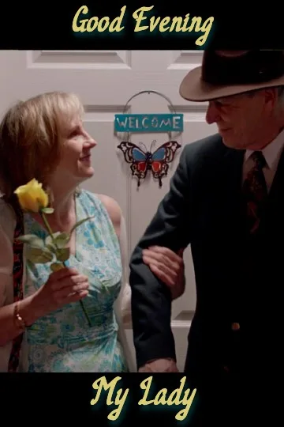
Contact Information
Email: tom.ascough@gmail.com
Phone: (352) 400-3251